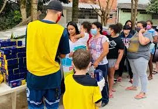
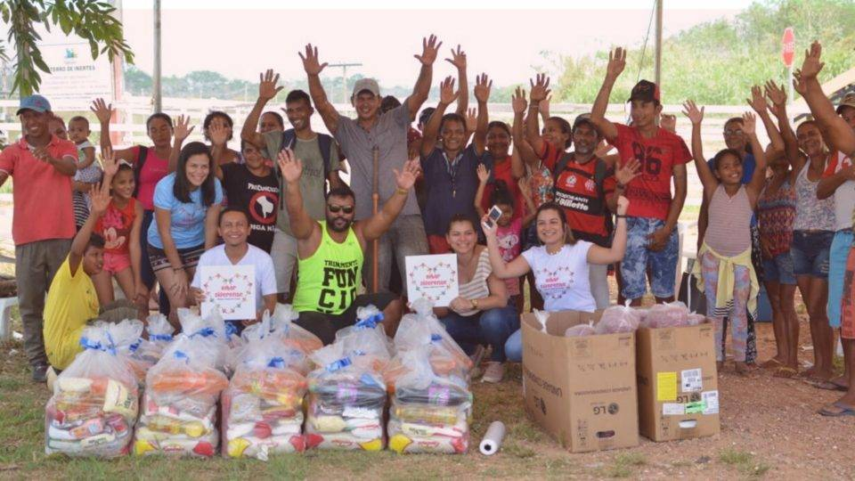

Voluntariado Participe dos nossos projetos como voluntário e faça a diferença!  Voluntários em ação durante campanha comunitária. Ação Comunitária
Como Doar Você pode doar alimentos, roupas ou contribuir financeiramente.  Entrega de doações para famílias carentes. Campanha Ativa